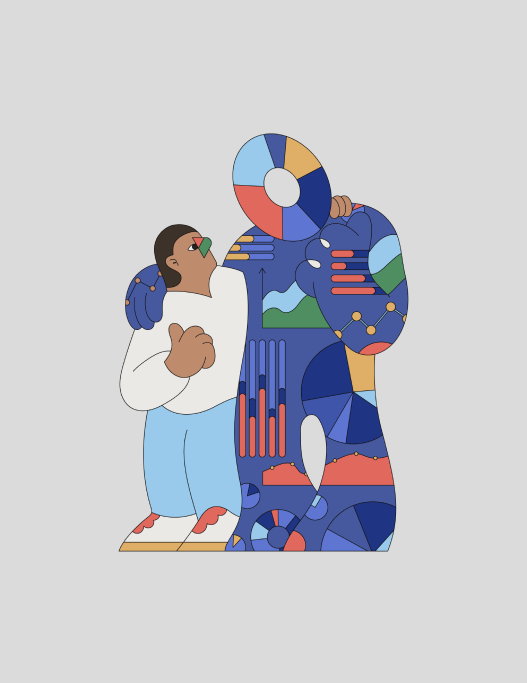
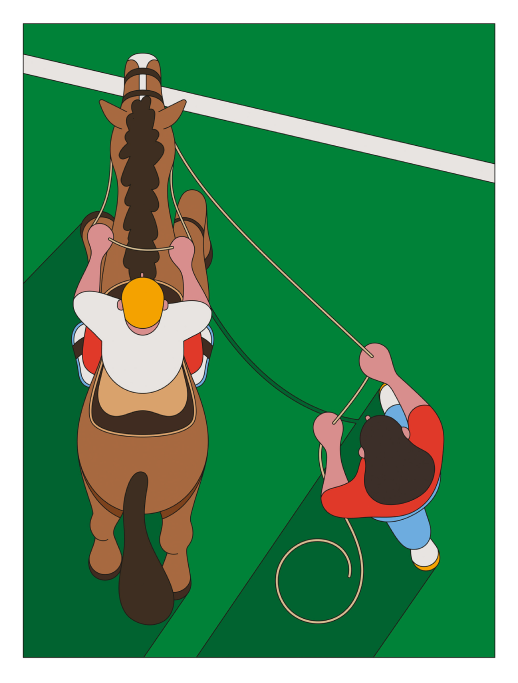
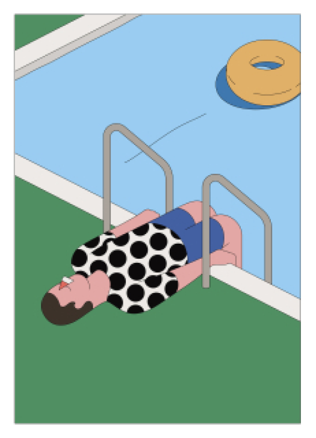
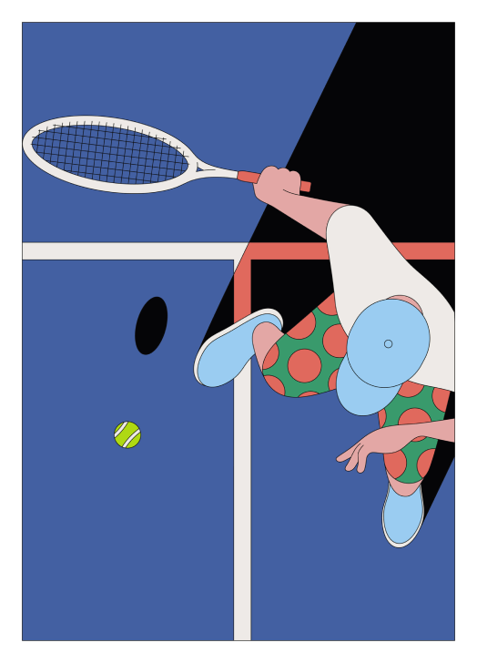

Camilo Hunica

Camilo Huinca's work is rich with colour, content and a brightly illustrated narrative that speaks for itself.

Born and raised in Santiago in Chile, Camilo has divided his career between graphic design and painting.


Camilo is fascinated by everyday scenes, moments and personal habits, often depicting scenic bus routes
Working independently has allowed Camilo to “develop his own style, having a main focus on the use of curiosity.”